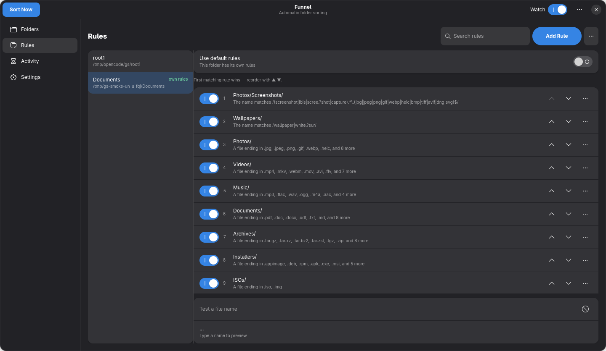
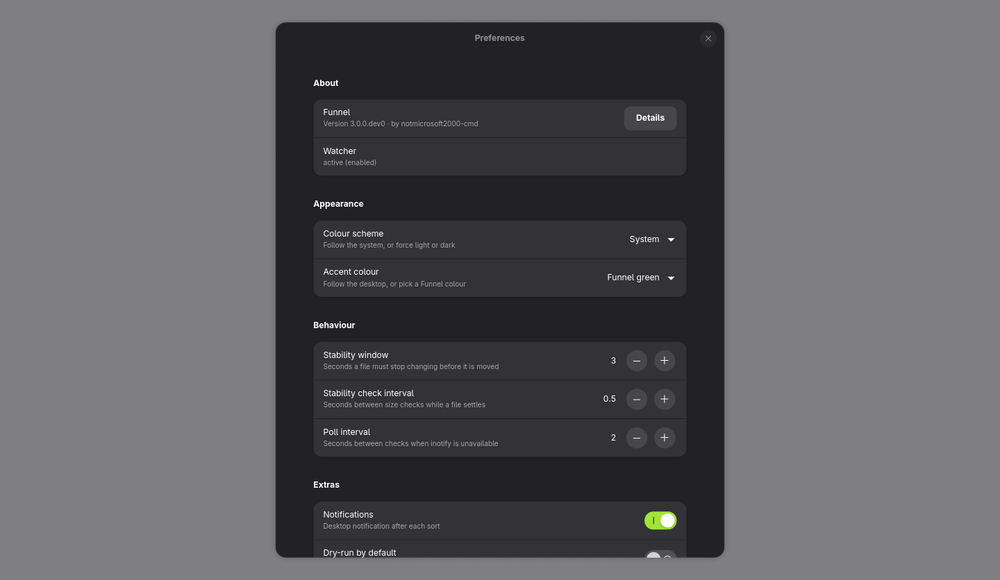
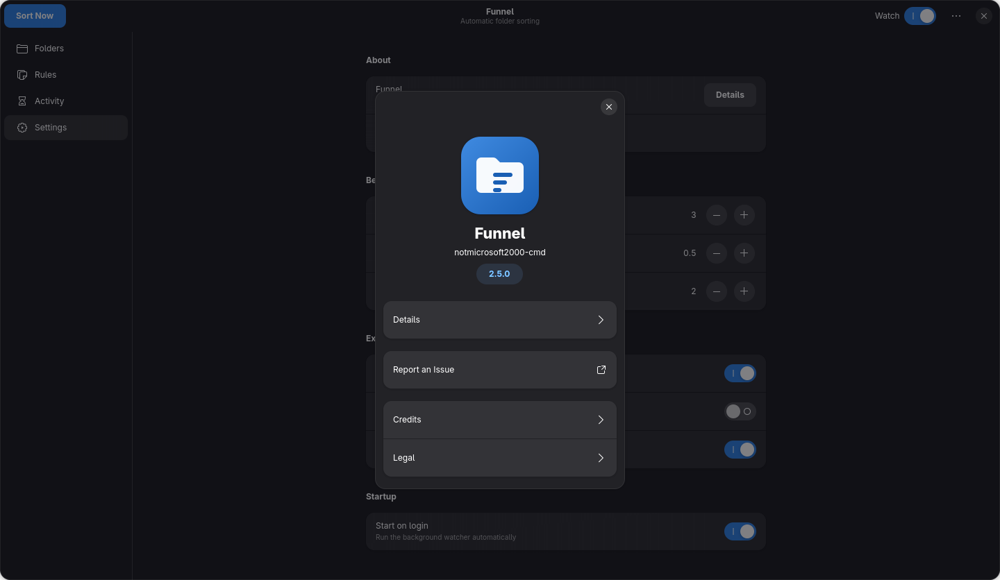
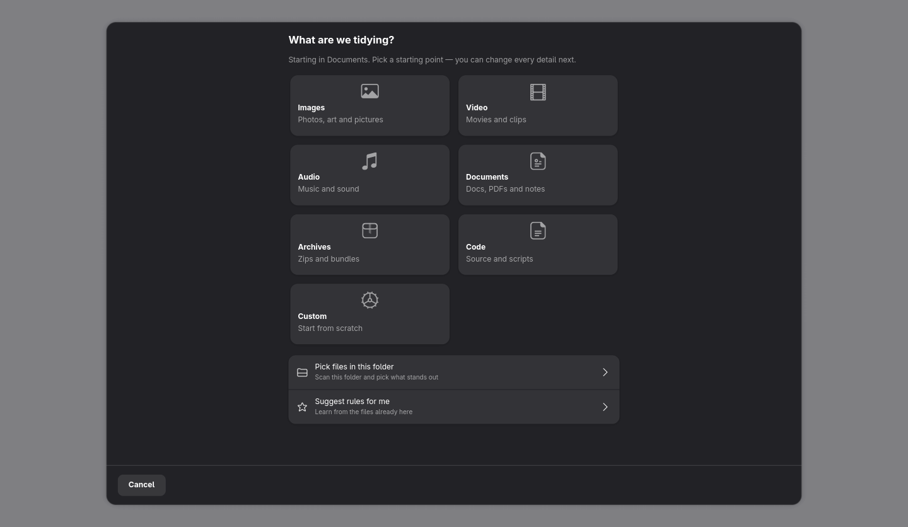
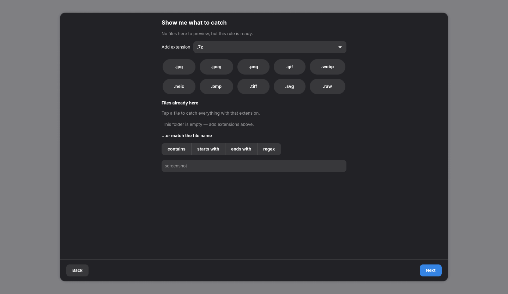
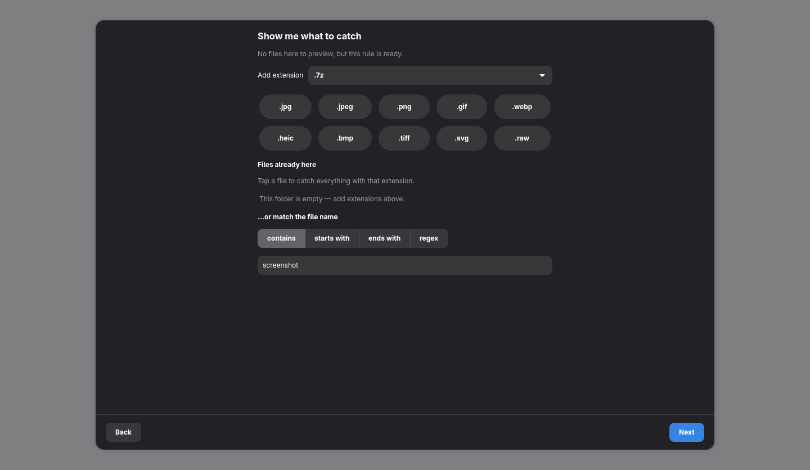
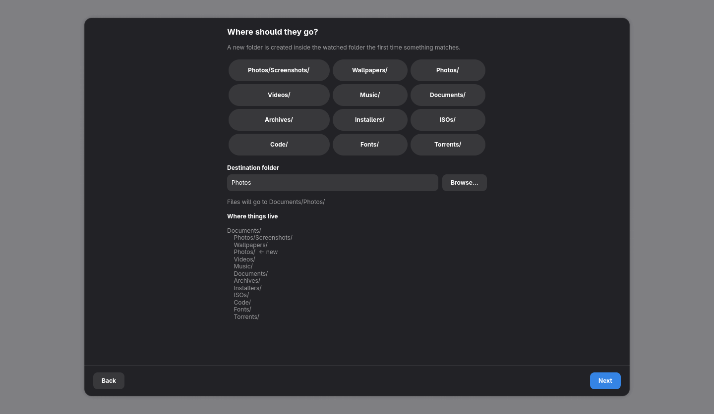
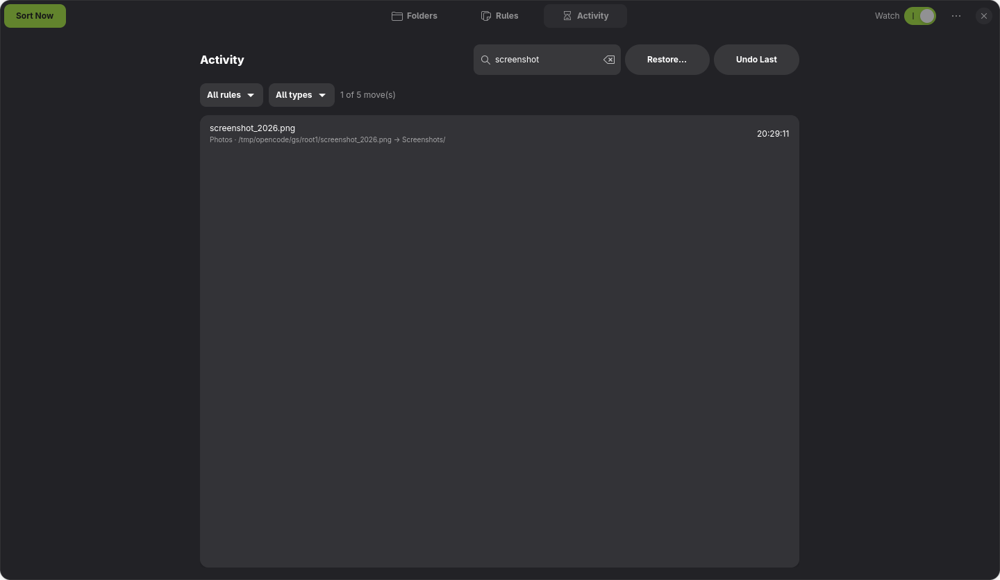
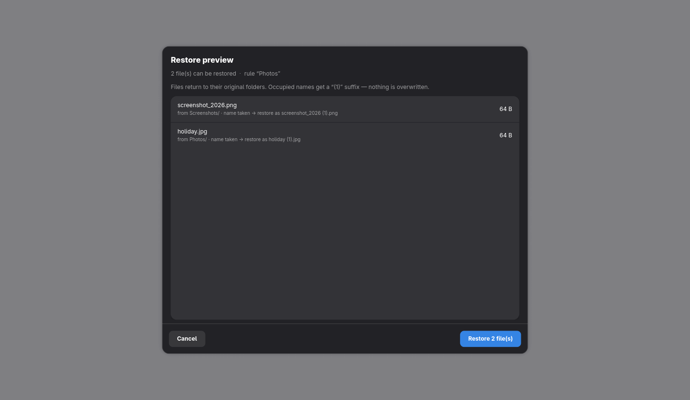

Overview
One pass reads the top level of each folder, matches every file against that folder's rules, and moves it to the first destination that fits.
A sweep reads only the top level of each watched folder. Directories, symlinks and names that begin with a dot are left alone, so a folder is never sorted into itself.
Matching walks the rule list from top to bottom. A rule matches on an extension (a suffix match on the lowercased name), on a regular expression searched against the name, or on both. The first enabled rule that matches decides the destination, and its position in the list is its priority.
Files that match no rule go to Needs-review inside the watched folder. An existing name is not replaced: a second report.pdf becomes report (1).pdf.
A file with an in-progress suffix is never moved: .part, .crdownload, .download, .opdownload, .partial, .tmp, .filepart or .ytdl. Everything else must be older than its settle window: 3 seconds by default, plus 4 seconds per 100 MB above 100 MB, capped at 60 extra seconds. With cautious downloads on (the default), the sweep then samples each file twice, 0.5 seconds apart, and holds it if the size or modification time changed. The sweep reports these files as waiting.
Requirements
The Flatpak carries its own runtime. The user-local install runs from the source tree and uses the GTK4 stack already on the system.
- Flatpak: a Linux desktop with Flatpak installed. The runtime provides GTK4 and libadwaita.
- User-local: Python 3.11 or newer, PyGObject, GTK4 and libadwaita. The installer copies the source and creates a symlink; it does not install Python packages.
- Watching: the watcher uses
watchdogwhen it is installed and falls back toinotifywait. A sweep needs neither. - Files: local paths that your user account can read and write. Symlinks are skipped.
To check the GTK bindings before a source install:
python3 -c "import gi; gi.require_version('Gtk', '4.0'); gi.require_version('Adw', '1')"An ImportError or a missing namespace names the package the desktop is missing.
Windows has a separate native build in the gnu-sorter-windows repository, with the same four working areas and the same GPL-3.0 license. The download page lists both platforms.
Installation
Flatpak is the primary Linux package. The user-local installer copies the app into your home directory and needs no root.
Flatpak
The three commands add the project repository, install Funnel and start it.
flatpak remote-add --if-not-exists funnel \
https://notmicrosoft2000-cmd.github.io/gnu-sorter/flatpak/io.neptunepc.Funnel.flatpakrepo
flatpak install funnel io.neptunepc.Funnel
flatpak run io.neptunepc.FunnelUpdates arrive with flatpak update io.neptunepc.Funnel. The sandbox does not allow a tray icon or login autostart, so neither is part of this build. Other install paths.
User-local install
The script installs into the current user's home directory. It copies the app to ~/.local/share/gnu-sorter/app, links ~/.local/bin/gnu-sorter, and writes the desktop entry, icons, KDE service menu and systemd user unit.
curl -fsSL https://raw.githubusercontent.com/notmicrosoft2000-cmd/gnu-sorter/main/install-gnu-sorter.sh | bashAdd --service to enable and start the watcher at login:
curl -fsSL https://raw.githubusercontent.com/notmicrosoft2000-cmd/gnu-sorter/main/install-gnu-sorter.sh | bash -s -- --serviceWithout --service the unit is written but not enabled. Start it later with systemctl --user enable --now gnu-sorter.service.
By hand
-
01
Clone the repository
The checkout contains the app, the installer and the service unit.
Clonegit clone https://github.com/notmicrosoft2000-cmd/gnu-sorter.git && cd gnu-sorter -
02
Run the installer
Add
--serviceif the watcher should start at login.Install./install.sh -
03
Start the app
The launcher also appears in your applications menu. The CLI modes work without a graphical session.
Rungnu-sorter --gui
A source checkout reads the same configuration directory as the installed copy, so the two share folders, rules and journal.
Flatpak: flatpak update io.neptunepc.Funnel. User-local: gnu-sorter --update-check, then gnu-sorter --update. The updater follows the release channel of the running build, and after an update it prints the systemctl --user restart gnu-sorter command when the watcher is enabled.
Quick start
Add a folder, give it a rule, then run a sweep. Watching repeats the same pass as new files arrive.
In the application
-
01
Add a folder
Open Folders, then Add Folder. Pick a folder your user account owns, for example
~/Downloads. -
02
Add a rule
Rules, then Add Rule opens the wizard. A rule needs a destination name and at least one condition.
-
03
Or start from a preset
The menu half of Add Rule applies a preset to the selected folder. A preset replaces that folder's list.
-
04
Run once or watch
Sort Now runs a sweep. Watch repeats the same pass every
watch_intervalseconds, 2 by default. -
05
Check the result
Activity lists each move with its rule and destination. Undo restores selected records.
From the command line
Start with a dry run. It prints each planned move and leaves the folder untouched.
gnu-sorter --list-roots
gnu-sorter --sweep --dry-run
gnu-sorter --sweepThen watch, or reverse the last move:
gnu-sorter --watch
gnu-sorter --undo-last 1With no mode flag, gnu-sorter opens the graphical interface. --watch stays in the foreground; the systemd user unit runs it at login.
The interface
The GTK4 build has five areas: Folders, Rules, Activity, Settings and About. The Windows build has the same four working areas with WinUI 3 controls.
Folders lists each watched directory and the number of rules it uses. Rules shows the selected folder's list in priority order, with a sort count beside each rule. Activity is a view of the journal. Settings holds timings, notifications, appearance and updates.







Rules
A rule is a destination folder plus at least one condition. Rules are stored as JSON, in the order they are evaluated.
The rule editor writes the fields below. The advanced editor shows the same object as JSON, and --export-rules writes it to a file.
| Field | Type | Behaviour |
|---|---|---|
name | string | Destination folder, relative to the watched folder. Subfolders are allowed (Photos/Screenshots). Absolute paths, .. components and Windows reserved names are rejected. |
extensions | array | Suffix match on the lowercased name, so jpg also matches photo.JPG. Compound suffixes such as tar.gz work the same way. |
match_name_regex | string | Case-insensitive Python regular expression, applied with re.search, so it can match any part of the name. A pattern that does not compile is ignored. |
exclude_name_regex | string | Veto. A matching name skips this rule even when an extension or name condition matched. |
match_all | boolean | Catch-all. Matches every file that reaches it, so rules below it are unreachable. |
match_mode | string | "all" requires every condition that is set. The default requires any one condition. |
enabled | boolean | false skips the rule without removing it. |
min_size_mb, max_size_mb | number | Size bounds in MB. A file outside them skips the rule. A sweep has the file metadata these bounds need. |
modified_within_days | number | The file's modification time must be within this many days. |
How a file is matched
-
01
Test the conditions
Read the name in lowercase, test each extension with a suffix match, and test the name regex with
re.search. -
02
Apply the mode
By default one hit is enough. With
match_mode: "all", every condition that is set must hit. -
03
Apply the limits
The exclusion regex, size bounds and age bound can all veto the rule after its conditions matched.
-
04
Take the first survivor
The first enabled rule that survives decides the destination. If none do, the file goes to
Needs-review.
A worked rule
This rule catches image files whose name also looks like a screenshot, and only when both conditions hold:
{
"name": "Photos/Screenshots",
"extensions": ["png", "jpg"],
"match_name_regex": "screenshot|capture",
"match_mode": "all"
}In a folder containing Screenshot 2026-05-02.png, capture_01.jpg and screen_capture.mp4, the first two move to Photos/Screenshots. The third matches the name pattern but fails the extension test, so the rule skips it and matching continues with the next rule.
Without match_mode, the same pattern and extension list would be OR-ed: screen_capture.mp4 would match on the name alone and move.
The default template lists Photos/Screenshots and Wallpapers before Photos. Both name rules must stay above the broad Photos extension rule, or the first .jpg would be claimed as a photo before either name test runs.
Per-folder rules
A folder either inherits the shared template or keeps its own ruleset. A folder with its own list is detached: changes to the template do not reach it.
- Template
- ~/.config/gnu-sorter/rules.json
- Folder list
- ~/.config/gnu-sorter/roots.d/<hash>.json
- Hash
- first 40 hex characters of the SHA-256 of the absolute folder path
- Contents
- {"path": "...", "rules": [ ... ]}
A ruleset is keyed by path, not by inode or name. Move or rename the folder and the old file stays in roots.d under the previous path; the folder at the new path inherits the template again. Delete the stale file to clean up.
gnu-sorter --detach-rules --root ~/Downloads
gnu-sorter --list-rules --root ~/Downloads
gnu-sorter --attach-rules --root ~/Downloads--detach-rules writes a copy of the effective rules to the folder's file. --attach-rules deletes that file, so the folder inherits the template again. --add-rule with --root detaches a folder automatically.
If --list-rules --root says inherits the default template when you expected custom rules, the folder path has changed or the ruleset file was removed. Run --detach-rules at the current path and reapply the rules.
The rule wizard
The wizard opens from Rules, Add Rule. It writes the same rule object as the advanced editor and saves nothing until the last step.
-
01
Choose the folder
Pick the folder to tidy. The wizard starts on the folder selected in Rules.
-
02
Pick what to catch
Choose extensions, a name pattern, or both. Patterns are regular expressions and are tested with
re.search. -
03
Take the destination
Keep the suggested relative name or type another.
Photos/Screenshotsis valid; an absolute path or..is rejected. -
04
Add limits
Set
min_size_mb,max_size_mbormodified_within_days, then choose any or all for the match mode. -
05
Set priority and scope
Choose the rule's position in the folder's list and confirm the folder. Position is priority: the first match wins.
-
06
Review the result
The last step lists real files the rule would move, using their size and modification time. Save writes the rule; Cancel discards it.






The advanced editor exposes the same fields as JSON. Rule fields.
Presets
A preset replaces the selected folder's rules with a starting list. It does not merge with what was there.
The presets are in the menu half of the Add Rule button. Applying one detaches the folder if it was inheriting, then writes the new list to roots.d. The template and other folders are not touched.
| Preset | Rules written |
|---|---|
GNOME defaults | The template list: Photos/Screenshots, Wallpapers, Photos, Videos, Music, Documents, Archives, Installers, ISOs, Code, Fonts and Torrents. |
Photography | Photos/Screenshots, Wallpapers, Photos and Videos. |
Code projects | Code, Documents and Archives. |
Empty | No rules. Every file goes to Needs-review until a rule is added. |
Configuration
Configuration is plain JSON. The paths below are the default Linux locations.
- rules.json
- Default template ruleset.
- roots.json
- Watched folders, each with an
enabledflag. - roots.d/*.json
- Per-folder rulesets, keyed by absolute path.
- settings.json
- Timings, notifications, appearance, updates and journal limits.
- history.log
- Move journal, one JSON object per line.
- history.log.bak
- Copy written before a journal trim, or by
--backup-journal.
Settings defaults
| Setting | Default | Effect |
|---|---|---|
min_stable_seconds | 3 | Minimum age before a file is eligible. |
stability_interval | 0.5 | Seconds between the confirmation probes. |
cautious_downloads | true | Recheck size and modification time after the settle window. |
watch_interval | 2 | Seconds between watch passes. |
notifications | true | Desktop notification after a watched move. |
dry_run_default | false | Make --sweep a preview unless the setting is turned off. |
check_for_updates | true | Check for a newer release after the GUI starts. |
color_scheme | "default" | Follow the system, or force "light" or "dark". |
accent | "green" | Accent colour key, or "system" to follow the desktop. |
history_max_entries | 2500 | Entries kept when the journal is trimmed. |
history_max_bytes | 1000000 | File size that triggers a trim. |
Pass --config DIR to isolate a run. The config files and history.log are read from DIR, and the default data directory is not touched. Set GNU_SORTER_HISTORY to move the journal when no --config is given.
gnu-sorter --config /tmp/funnel-test --list-rulesThe journal
A completed move appends one JSON object to history.log. The Activity page and the CLI read the same file.
The journal is read once into an in-memory index. That index powers the Activity search and the sort count beside each rule, and it is what restore selects from.
- v
- Journal format version. The current version is 2.
- id
- Move id, a UUID hex string.
- ts
- Local timestamp,
YYYY-MM-DD HH:MM:SS. - src
- Source path.
- dest
- Destination path.
- size, mtime
- Bytes and epoch seconds, used to detect a file already back in place.
- rule
- Rule name that matched, when known.
- root
- Watched folder that owned the sweep.
- batch
- Id shared by all moves in one sweep.
{"v": 2, "id": "5f2a9c1b7e4d4c0f9a3e6b8d2c1f0a4e", "ts": "2026-05-02 14:31:08", "src": "/home/you/Downloads/report.pdf", "dest": "/home/you/Downloads/Documents/report.pdf", "size": 482113, "mtime": 1777720268.0, "rule": "Documents", "root": "/home/you/Downloads", "batch": "3c9e7a1d5b2f4e8a9c0d6f3b1e7a5c2d"}When the file passes 1,000,000 bytes, Funnel copies it to history.log.bak and keeps the newest 2,500 entries. Both limits are settings: history_max_bytes and history_max_entries.
Search and restore
| Selector | Selects |
|---|---|
--since 7d, --before 2026-05-01 | A time window. Units are s, m, h, d and w. |
--journal-rule Photos | Records caught by one rule name. |
--journal-name 'screenshot*' | Name substring or glob. |
--journal-ext png,jpg | Source extension, comma list allowed. |
--journal-min-size 1M, --journal-max-size 500K | Recorded byte size. |
--journal-folder ~/Downloads/Documents | Destination folder. |
--journal-batch ID | One sweep. |
--limit 50 | The last N records. |
gnu-sorter --journal --since 7d --journal-rule Photos
gnu-sorter --restore --journal-name '*.jpg' --dry-run
gnu-sorter --restore --journal-rule Photos --restore-into ~/RestoredA restore removes the records it completed, so a second run cannot replay them. Records whose file is gone, or whose target is occupied under --on-conflict skip, stay in the journal. Add --dry-run to print the plan before anything moves.
Back up, export or merge the journal with:
gnu-sorter --backup-journal
gnu-sorter --export-journal ~/history-export.log
gnu-sorter --import-journal ~/history-export.logAn import skips records whose id is already present. A record without an id is always appended.


CLI reference
The table lists the commands covered on this page. Run gnu-sorter --help for every flag, including the service commands and --config.
| Command | Description |
|---|---|
gnu-sorter --gui | Launch the graphical application. |
gnu-sorter --list-rules | List the default template rules. |
gnu-sorter --list-rules --root ~/Downloads | View the effective rules for a specific folder. |
gnu-sorter --add-rule <name> --folder <folder> --root <path> | Add a rule to a specific folder only. |
gnu-sorter --attach-rules --root <path> | Revert a folder to the shared template rules. |
gnu-sorter --export-rules <file> | Write the current rules (or a folder's, with --root) to a JSON file. |
gnu-sorter --import-rules <file> | Replace the current rules (or a folder's, with --root) from a JSON file. |
gnu-sorter --sweep | Sort the configured folders once. |
gnu-sorter --watch | Watch the folders and sort new files. |
gnu-sorter --journal --journal-name <glob> | Search the move journal by file name (substring or glob), rule, folder or date range. |
gnu-sorter --restore --journal-rule <name> --dry-run | Preview a restore; drop --dry-run to commit. Add --restore-into to target a folder. |
gnu-sorter --undo-last <n> | Undo the last n moves. |
gnu-sorter --backup-journal | Copy the journal to history.log.bak. |
gnu-sorter --export-journal <file> / --import-journal <file> | Move the journal between machines; imports merge without duplicating. |
gnu-sorter --help | Show all available options. |
Uninstalling
The uninstaller removes the app and its launchers. Configuration and the journal are a separate decision.
Run the uninstaller from the checkout. It disables and removes the systemd user unit, then deletes ~/.local/bin/gnu-sorter, the desktop entry, the KDE service menu, the icons and ~/.local/share/gnu-sorter/app.
./uninstall.shConfig and journal survive by default, so a reinstall keeps its folders and rules. --purge also removes ~/.config/gnu-sorter and ~/.local/share/gnu-sorter/history.log.
./uninstall.sh --purgeFlatpak: flatpak uninstall io.neptunepc.Funnel removes the app. Add --delete-data to remove its config and journal as well.
Troubleshooting
Most reports come down to three things: a file that was not eligible, a rule that came earlier in the list, or a folder that no longer matches its ruleset path.
- A file stayed in the folder
- Run
gnu-sorter --sweep --dry-run. The summary reports held files, and a dry run lists up to ten of them. A file is held while it carries an in-progress suffix, while it is younger than its settle window, or when the confirmation probes see its size or modification time change. Directories, symlinks and dot files are skipped before matching starts. - A file went to the wrong folder
- The first matching rule wins. A catch-all (
match_all) or a broad extension rule above the intended rule claims the file first. Move the specific rule above it, or give the broad rule anexclude_name_regex. - A folder ignores its own rules
- Rulesets are keyed by absolute path. Run
gnu-sorter --list-rules --root ~/Downloads: it printsown rulesorinherits the default template. If the folder moved, recreate the ruleset at the new path with--detach-rules. - Undo says nothing matches
- A completed restore removes its records, and a trimmed journal keeps the newest 2,500 entries. Run
gnu-sorter --journal --limit 20to see what remains. A restore from a different configuration needs--config DIR. - The GUI does not start
- With the source install, a missing
gi,Gtk 4.0orAdw 1raisesImportError. The CLI modes run without GTK. Install PyGObject, GTK4 and libadwaita, or use the Flatpak. Rungnu-sorter --versionto confirm which build is onPATH. - Watch does nothing
- Check
systemctl --user status gnu-sorter.service. Without--servicethe unit is installed but not enabled. The watcher useswatchdogwhen available and falls back toinotifywait; if neither is installed, use--sweepor install one of them.
Getting help
Report a problem at the issue tracker. Include the build, the rules and the journal lines for the file.
Run gnu-sorter --version, then gnu-sorter --list-rules --root <path> for the folder in question. For a move that needs reversing, add the matching lines from gnu-sorter --journal --journal-name '<name>*'. Redact file names if they are private.
Report a problem at the issue tracker. The source is at github.com/notmicrosoft2000-cmd/gnu-sorter. The Windows build is in its own repository, gnu-sorter-windows. Both builds are GPL-3.0.